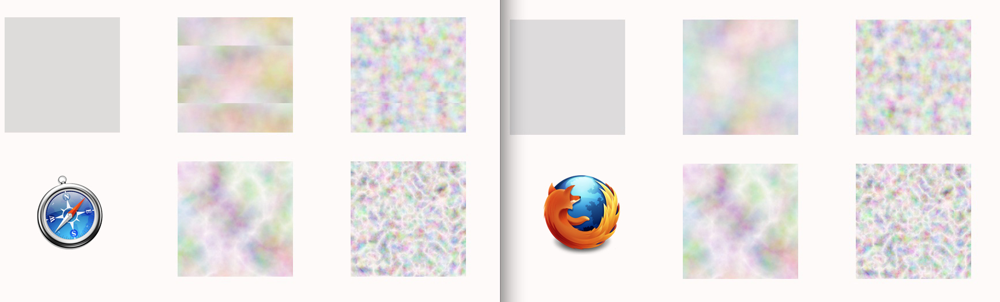
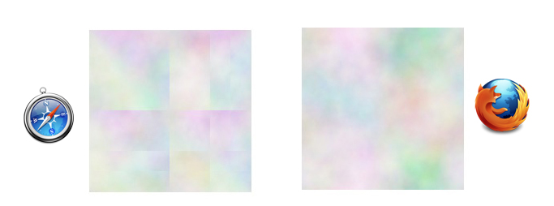
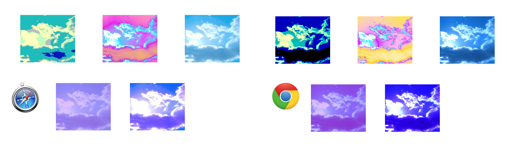
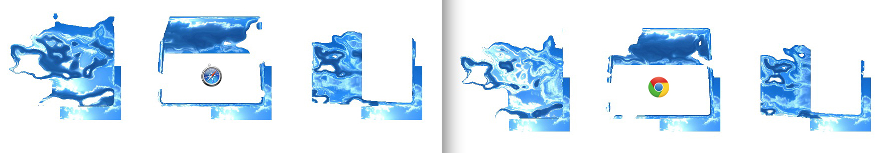
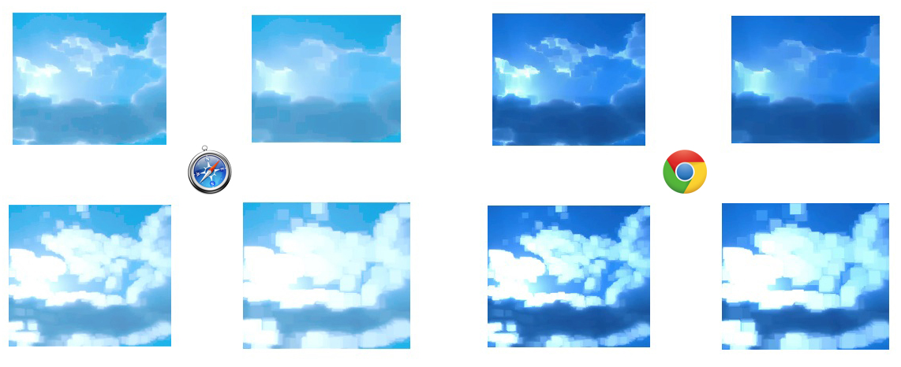

Filtros
La especificación a veces es tan técnica que algunas veces en lugar de ayudarnos termina por confundirnos. Este ha sido el capítulo que más me ha costado escribir y me atrevería a decir que va a ser el más difícil de entender. Los filtros comparten una serie de atributos como x, y, width, height y result pero para obtener resultados tan dispares cada uno de ellos tiene sus propios atributos y estos a su vez tienen diferentes opciones. Creo que en más de una definición os vais a quedar así ( o_o ) lo he intentado explicar de la mejor manera posible, pero como siempre suelo decir lo mejor para aprender lo que hace cada elemento o atributo es ver gráficamente sus efectos y modificar el valor de cada atributo hasta el infinito y más allá.
Si has utilizado Photoshop te sonarán algunos de sus efectos. Antes de seguir vamos a ver la definición de que un filtro, es un efecto generado a través de una determinada serie de operaciones que se aplican a una fuente para conseguir un efecto diferente.
Es recomendable declarar los filtros dentro de la etiqueta <defs>. Los efectos de los filtros los vamos a aplicar a los objetos a través de filter=”url(#nombreDelFiltro)”
Los filtros comparten una serie de atributos que vamos a ver a continuación para así no tener que ir repitiendo lo mismo en cada filtro.
Con el atributo x determinamos la posición de la coordenada en el eje horizontal donde comenzará a aplicarse el filtro, su valor por defecto es del -10%.
Con el atributo y determinamos la posición de la coordenada en el eje vertical donde comenzará a aplicarse el filtro, su valor por defecto es del -10%.
Con el atributo width determinamos el porcentaje del objeto donde se aplicará el filtro, su valor por defecto es del 120%.
Con el atributo height determinamos el porcentaje del objeto donde se aplicará el filtro, su valor por defecto es del 120%.
Con el atributo result le indicamos un nombre para que este efecto sea utilizado en otro filtro. sólo funcionará en caso de que lo apliquemos a otro filtro. No hay que confundir result con id.
Con el atributo in le indicamos el nombre o una de las diferentes opciones donde aplicar el filtro, las opciones que tenemos a nuestra disposición son los siguientes:
SourceGraphic el filtro se aplica a toda la imagen, es el que viene por defecto.
SourceAlpha el filtro sólo se aplicará al canal alfa.
BackgroundImage el filtro se aplicará al fondo.
BackgroundAlpha el filtro sólo se aplicará al canal alfa del fondo.
FillPaint el filtro se aplica al relleno como si fuera un plano infinito. sólo en Firefox.
StrokePaint el filtro se aplica a la línea como si fuera un plano infinito. sólo en Firefox.
A continuación una lista que divide los filtros por categorías:
Inputs:
- feFlood
- feTurbulence
- feImage
Transformaciones:
- feColorMatrix
- feComponentTransfer
- feConvolveMatrix
- feGaussianBlur
- feDisplacementMap
- feMorphology
- feOffset
Efectos de luz:
- feSpecularLighting
- feDiffuseLighting
- feDistantLight
- feSpotLight
- fePointLight
Combinaciones:
- feMerge
- feBlend
- feComposite
- feTile
feFlood
Con este filtro conseguimos rellenar el objeto con un color. Vamos a definir el área con los atributos x y width height. Con el atributo color-flood le indicamos el color que queremos que utilice para el relleno y con color-opacity la opacidad que va a tener el filtro.

<defs>
<filter id="feflood">
<feFlood y="350" width="50%" height="10%" flood-color="crimson" flood-opacity=".2"/>
</filter>
</defs>
<rect x="500" y="200" width="300" height="300" fill="navajowhite"/>
<rect x="500" y="200" width="300" height="300" fill="navajowhite" filter="url(#feflood)"/>

Soporte
feTurbulence
Con este filtro creamos una imagen con el efecto Perlin Noise, y ahora os preguntaréis que demonios es esto, según la wikipedia es una función matemática que utiliza la interpolación entre un gran número de gradientes precalculados de vectores que construyen un valor que varía seudo-aleatoriamente en el espacio o tiempo.
Vamos a ver los atributos que podemos darle a este filtro.
Con baseFrequency controlamos el parámetro de la función del ruido. Le podemos pasar un sólo valor el cual servirá para la coordenada horizontal y vertical, o también le podemos pasar dos valores, el primero de ellos para la coordenada horizontal y el segundo para la vertical. El valor por defecto es 0.
Con num0ctaves controlamos el detalle de la turbulencia, cuanto mayor sea más detalle tendrá. Su valor por defecto es de 1.
Con seed controlamos el número inicial para el generador de números pseudo-aleatorios. Su valor por defecto es de 0.
Con stichTiles tenemos dos valores, por defecto es noStitch, y el segundo valor es stich con el conseguimos transiciones más suaves.
Con type tenemos dos valores, por defecto su valor es Turbulunce y el segundo valor es FractalNoise, a continuación vamos a ver un ejemplo donde vamos a poder ver el efecto de este atributo.

<defs>
<filter id="uno" filterUnits="objectBoundingBox" x="0%" y="0%" width="100%" height="100%">
<feTurbulence baseFrequency="1" seed="13" stitchTiles="stitch" type="fractalNoise" numOctaves="8"/>
</filter>
<filter id="dos" filterUnits="objectBoundingBox" x="0%" y="0%" width="100%" height="100%">
<feTurbulence baseFrequency=".01" seed="13" stitchTiles="stitch" type="fractalNoise" numOctaves="8"/>
</filter>
<filter id="tres" filterUnits="objectBoundingBox" x="0%" y="0%" width="100%" height="100%">
<feTurbulence baseFrequency=".05" seed="5" stitchTiles="stitch" type="fractalNoise" numOctaves="8"/>
</filter>
<filter id="cuatro" filterUnits="objectBoundingBox" x="0%" y="0%" width="100%" height="100%">
<feTurbulence baseFrequency="1" seed="13" stitchTiles="nostitch" type="turbulence" numOctaves="8"/>
</filter>
<filter id="cinco" filterUnits="objectBoundingBox" x="0%" y="0%" width="100%" height="100%">
<feTurbulence baseFrequency=".01" seed="13" stitchTiles="nostitch" type="turbulence" numOctaves="8"/>
</filter>
<filter id="seis" filterUnits="objectBoundingBox" x="0%" y="0%" width="100%" height="100%">
<feTurbulence baseFrequency=".05" seed="5" stitchTiles="nostitch" type="turbulence" numOctaves="8"/>
</filter>
</defs>
<image filter="url(#uno)" xlink:href="http://jorgeatgu.com/libro/images/zgzsky.jpg" width="200" height="200" y="50" x="150"/>
<image filter="url(#dos)" xlink:href="http://jorgeatgu.com/libro/images/zgzsky.jpg" width="200" height="200" y="50" x="450"/>
<image filter="url(#tres)" xlink:href="http://jorgeatgu.com/libro/images/zgzsky.jpg" width="200" height="200" y="50" x="750"/>
<image filter="url(#cuatro)" xlink:href="http://jorgeatgu.com/libro/images/zgzsky.jpg" width="200" height="200" y="300" x="150"/>
<image filter="url(#cinco)" xlink:href="http://jorgeatgu.com/libro/images/zgzsky.jpg" width="200" height="200" y="300" x="450"/>
<image filter="url(#seis)" xlink:href="http://jorgeatgu.com/libro/images/zgzsky.jpg" width="200" height="200" y="300" x="750"/>

Soporte
En IE10, IE 11 y Firefox el efecto es diferente.

feImage
Este filtro no es propiamente un filtro. Lo vamos a utilizar para aplicar un efecto de filtro sobre una imagen, el efecto que conseguimos se aplica sobre un elemento gráfico. Esto lo vamos a hacer indicando en la etiqueta <feImage> el atributo result=”” aquí le indicamos el nombre que tiene el atributo in2=”” del filtro que que queremos aplicar a la imagen.
En el ejemplo que vamos a ver a continuación se utiliza el filtro feTurbulence y feImage.

<defs>
<filter id="imagenconturbulencias" x="0" y="0" width="100%" height="100%">
<feImage result="resultado" xlink:href="zgzsky.jpg"/>
<feTurbulence baseFrequency=".01" seed="13" stitchTiles="stitch" type="fractalNoise" numOctaves="8" in2="resultado"/>
</filter>
</defs>
<rect fill="none" filter="url(#imagenconturbulencias)" width="200" height="200" x="200" y="200"/>

Soporte
En Firefox, IE10 y IE11 el efecto es diferente al que obtenemos en Safari, Chrome y Opera.

feColorMatrix
Con este filtro vamos a modificar el color RGBA a través de cuatro tipos ya predefinidos los cuales son matrix, saturate, hueRotate y luminanceToAplha.
Para obtener diferentes resultados tenemos el atributo values=”” para indicar los valores que queremos darle al filtro, cada tipo necesita diferentes valores.
Para matrix necesitamos veinte valores ordenados en cuatro filas de cinco.
Para saturate solamente necesitamos un valor, el cual tiene que estar entre el 0 y 1.
Para hueRotate sólo necesitamos un valor en grados que tiene que estar entre el 0 y 360.
Para luminanceToAplha no necesitamos ningún valor.

<defs>
<filter id="saturate" filterUnits="objectBoundingBox">
<feColorMatrix type="saturate" in="SourceGraphic" values="0.4"/>
</filter>
<filter id="matrix" filterUnits="objectBoundingBox">
<feColorMatrix type="matrix" in="SourceGraphic"
values="-1 2 -3 0 -.5
0 1 0 0 0
0 0 0 0 0
0 0 0 1 0"/>
</filter>
<filter id="hueRotate" filterUnits="objectBoundingBox">
<feColorMatrix type="hueRotate" in="SourceGraphic" values="60"/>
</filter>
<filter id="luminanceToAlpha" filterUnits="objectBoundingBox">
<feColorMatrix type="luminanceToAlpha" in="SourceGraphic" values="0.4"/>
</filter>
</defs>
<image filter="url(#saturate)" xlink:href="zgzsky.jpg" width="200" height="200" y="150" x="50"/>
<image filter="url(#matrix)" xlink:href="zgzsky.jpg" width="200" height="200" y="150" x="350"/>
<image filter="url(#hueRotate)" xlink:href="zgzsky.jpg" width="200" height="200" y="150" x="650"/>
<image filter="url(#luminanceToAlpha)" xlink:href="zgzsky.jpg" width="200" height="200" y="150" x="950"/>

Soporte
feComponentTransfer
Con este filtro vamos a poder modificar por separado los cuatro canales de la imagen, los cuales son Red Green Blue Alpha. Para ello tenemos los siguientes tipos de ajuste, identity, table, discrete, linear, y gamma. También podemos indicar una serie de valores que van del 0 al 1 a través del atributo tablesValues. También tenemos más atributos, el primero de ellos es slope y por defecto su valor es 1, intercept con un valor por defecto de 0, amplitude con un valor por defecto de 1, exponent con un valor por defecto de 1, por último offset con un valor por defecto de 0.
Vamos a ver los diferentes efectos de los tipos sobre la misma imagen.

<defs>
<filter id="discrete">
<feComponentTransfer>
<feFuncR type="discrete" tableValues="0 .5 1 1"/>
<feFuncG type="discrete" tableValues="0 .5 1"/>
<feFuncB type="discrete" tableValues="0 .5"/>
</feComponentTransfer>
</filter>
<filter id="table">
<feComponentTransfer>
<feFuncR type="table" tableValues="1 0 1" exponent="5"/>
<feFuncG type="table" tableValues="1 0 1" exponent="2"/>
<feFuncB type="table" tableValues="1 0 1" exponent="5"/>
</feComponentTransfer>
</filter>
<filter id="identity">
<feComponentTransfer>
<feFuncR type="identity"/>
<feFuncG type="identity"/>
<feFuncB type="identity"/>
</feComponentTransfer>
</filter>
<filter id="linear">
<feComponentTransfer>
<feFuncR type="linear" slope=".5" amplitude="6" intercept=".25"/>
<feFuncG type="linear" slope=".5" amplitude="2" intercept="0"/>
<feFuncB type="linear" slope=".5" amplitude="3" intercept=".5"/>
</feComponentTransfer>
</filter>
<filter id="gamma">
<feComponentTransfer>
<feFuncR type="gamma" amplitude="2" exponent="1"/>
<feFuncG type="gamma" amplitude="2" exponent="3"/>
<feFuncB type="gamma" amplitude="2" exponent="1"/>
</feComponentTransfer>
</filter>
</defs>
<image filter="url(#discrete)" xlink:href="zgzsky.jpg" width="200" height="200" y="150" x="150"/>
<image filter="url(#table)" xlink:href="zgzsky.jpg" width="200" height="200" y="150" x="450"/>
<image filter="url(#identity)" xlink:href="zgzsky.jpg" width="200" height="200" y="150" x="750"/>
<image filter="url(#linear)" xlink:href="zgzsky.jpg" width="200" height="200" y="400" x="280"/>
<image filter="url(#gamma)" xlink:href="zgzsky.jpg" width="200" height="200" y="400" x="550"/>

Soporte
El efecto en Safari genera colores diferentes al efecto en Chrome, Firefox y Opera.
El efecto de identity sólo se ve en Safari.

feConvolveMatrix
Con este filtro vamos a procesar la imagen como un filtro de deconvolución, donde cada pixel va a ser reemplazado por un nuevo pixel calculado en el área relativa al pixel. Vamos a ver los diferentes atributos que tiene este filtro.
Con order le indicamos el número de valores que va a tener nuestra matriz, si sólo pasamos un valor este valdrá para la coordenada horizontal y para la vertical, si le pasamos dos valores el primero corresponderá a la coordenada horizontal y el segundo a la vertical, su valor por defecto es de 3.
En kernelMatrix vamos a indicar todos los valores, estará condicionado al valor que tenga order.

<defs>
<filter id="uno">
<feConvolveMatrix order="3"
kernelMatrix="-1 -1 3
-2 1 -1
-1 1 -1"/>
</filter>
<filter id="dos">
<feConvolveMatrix order="4"
kernelMatrix="-2 2 1 -1
-1 3 2 1
-1 0 -1 -4
-1 1 0 0"/>
</filter>
</defs>
<image filter="url(#uno)" xlink:href="zgzsky.jpg" width="300" height="300" y="150" x="100"/>
<image filter="url(#dos)" xlink:href="zgzsky.jpg" width="300" height="300" y="150" x="700"/>

Soporte
La fotografía se ve más clara en Safari.
feGaussianBlur
Con este filtro conseguimos el efecto de desenfoque gaussiano, si has utilizado Adobe Photoshop seguramente te sonará este filtro. Solamente tenemos el atributo stdDesviation con el cual indicamos la potencia de desenfoque del filtro, si solamente le pasamos un valor este servirá tanto para el desenfoque horizontal como vertical, si le pasamos dos valores el primero será para el desenfoque horizontal y el segundo para el desenfoque vertical.

<defs>
<filter id="uno">
<feGaussianBlur stdDeviation="3"/>
</filter>
<filter id="dos">
<feGaussianBlur stdDeviation="9"/>
</filter>
<filter id="tres">
<feGaussianBlur stdDeviation="18"/>
</filter>
</defs>
<image filter="url(#uno)" xlink:href="zgzsky.jpg" width="200" height="200" y="200" x="150"/>
<image filter="url(#dos)" xlink:href="zgzsky.jpg" width="200" height="200" y="200" x="450"/>
<image filter="url(#tres)" xlink:href="zgzsky.jpg" width="200" height="200" y="200" x="750"/>

Soporte
La fotografía se ve más clara en Safari.
feDisplacementMap
Con este filtro vamos a transformar los píxeles de una imagen en formas geométricas. Para ello vamos a utilizar los canales R, G, B y A de la imagen a través del atributo xChannelSelector para seleccionar el canal horizontal, con yChannelSelector vamos a seleccionar el canal vertical, ambos utilizarán por defecto el canal A. Por último con el atributo scale determinamos el tamaño de la distorsión, por defecto su valor es de 0.

<defs>
<filter id="uno">
<feGaussianBlur stdDeviation="3" result="gausiano"/>
<feDisplacementMap in="SourceGraphic" in2="gausiano" scale="200" xChannelSelector="R" yChannelSelector="G" result="C"/>
</filter>
<filter id="dos">
<feGaussianBlur stdDeviation="3" result="gausiano"/>
<feDisplacementMap in="SourceGraphic" in2="gausiano" scale="200" xChannelSelector="G" yChannelSelector="A" result="C"/>
</filter>
<filter id="tres">
<feGaussianBlur stdDeviation="3" result="gausiano"/>
<feDisplacementMap in="SourceGraphic" in2="gausiano" scale="200" xChannelSelector="A" yChannelSelector="R" result="C"/>
</filter>
</defs>
<image filter="url(#uno)" xlink:href="zgzsky.jpg" width="200" height="200" y="200" x="150"/>
<image filter="url(#dos)" xlink:href="zgzsky.jpg" width="200" height="200" y="200" x="450"/>
<image filter="url(#tres)" xlink:href="zgzsky.jpg" width="200" height="200" y="200" x="750"/>

Soporte
El efecto en Safari es ligeramente diferente al de Opera y Chrome.

feMorphology
Con este filtro vamos a generar un efecto de engorde o de adelgazamiento del objeto. Para ello disponemos del atributo operator que tiene dos opciones, erode y dilate, su valor por defecto es erode con el cual adelgazamos la imagen, el otro es dilate con el que conseguimos expandir la imagen. Con el atributo radius le indicamos el tamaño de la transformación, si sólo le pasamos un valor este será para la coordenada horizontal y vertical, si le pasamos dos valores el primero de ellos corresponderá a la coordenada horizontal y el segundo a la coordenada vertical.

<defs>
<filter id="uno">
<feMorphology operator="erode" in="SourceGraphic" radius="3"/>
</filter>
<filter id="dos">
<feMorphology operator="erode" in="SourceGraphic" radius="6"/>
</filter>
<filter id="tres">
<feMorphology operator="dilate" in="SourceGraphic" radius="3"/>
</filter>
<filter id="cuatro">
<feMorphology operator="dilate" in="SourceGraphic" radius="6"/>
</filter>
</defs>
<image filter="url(#uno)" xlink:href="zgzsky.jpg" width="200" height="200" y="50" x="150"/>
<image filter="url(#dos)" xlink:href="zgzsky.jpg" width="200" height="200" y="50" x="450"/>
<image filter="url(#tres)" xlink:href="zgzsky.jpg" width="200" height="200" y="300" x="150"/>
<image filter="url(#cuatro)" xlink:href="zgzsky.jpg" width="200" height="200" y="300" x="450"/>

Soporte
En Safari la imagen se ve más clara.

feOffset
Con este filtro vamos a desplazar a lo largo del documento la imagen, es ideal para crear un efecto de sombra o drop shadow al texto. Para desplazar el efecto a lo largo del documento disponemos de los atributos dx para el eje horizontal y dy para el eje vertical.

<defs>
<filter id="uno" width="150%" height="150%">
<feGaussianBlur in="SourceAlpha" stdDeviation="2.5" result="gausiano"/>
<feOffset in="gausiano" dx="10" dy="10" result="combinar"/>
<feMerge>
<feMergeNode in="combinar"/>
<feMergeNode in="SourceGraphic"/>
</feMerge>
</filter>
<filter id="dos" width="150%" height="150%">
<feColorMatrix type="hueRotate" in="SourceGraphic" values="60" result="colores"/>
<feOffset in="colores" dx="100" dy="0" result="combinar"/>
<feMerge>
<feMergeNode in="combinar"/>
<feMergeNode in="SourceGraphic"/>
</feMerge>
</filter>
</defs>
<text filter="url(#uno)" class="bold" x="230" y="100" fill="crimson">HOLA QUE PASA QUE TAL
</text>
<image filter="url(#dos)" xlink:href="zgzsky.jpg" width="200" height="200" y="150" x="500"/>

Soporte
Efectos de luz
Para conseguir efectos de luz a través de los filtros tenemos a nuestra disposición feSpecularLighting y feDiffuseLighting, para conseguir diferentes efectos de luz tenemos tres opciones que deberán ir siempre dentro de las etiquetas de los filtros, las opciones que tenemos son feDistantLight, fePointLight y feSpotLight.
feDistantLight
Con este filtro vamos a obtener imágenes mucho más claras, dispone de los atributos azimuth y elevation, a los dos le pasaremos valores desde 0 a 360 grados, por defecto su valor es de 0.

<defs>
<filter id="uno">
<feSpecularLighting specularConstant="100" lighting-color="crimson" result="primero">
<feDistantLight azimuth="180" elevation="180">
</feSpecularLighting>
<feComposite in="SourceGraphic" in2="primero" operator="arithmetic" k1="1" k2="1" k3 ="0" k4="0"/>
</filter>
</defs>
<image xlink:href="zgzsky.jpg" x="0" filter="url(#uno)" width="50%" height="100%"/>
<image xlink:href="zgzsky.jpg" x="50%" width="50%" height="100%"/>


Soporte
En Chrome y Opera el efecto es el mismo. En IE10, IE11 y Firefox el efecto es el mismo.
fePointLight
Con este filtro vamos a conseguir un efecto similar al del sol, tenemos los atributos x e y para posicionar el efecto a lo largo de la imagen, y el atributo z para aumentar el radio del efecto.

<defs>
<filter id="uno">
<feSpecularLighting specularConstant="3" specularExponent="45" lighting-color="crimson" result="primero">
<fePointLight x="300" y="450" z="150">
</feSpecularLighting>
<feComposite in="SourceGraphic" in2="primero" operator="out"/>
</filter>
</defs>
<image xlink:href="zgzsky.jpg" x="0" filter="url(#uno)" width="50%" height="100%"/>
<image xlink:href="zgzsky.jpg" x="50%" filter="url(#uno)" width="50%" height="100%"/>


Soporte
En Chrome y Opera el efecto del filtro es ligeramente diferente.
En iOS7 el lugar donde se aplica el filtro cambia de posición.
feSpotLight
Con este filtro vamos a añadir una luz focal a las imágenes, tenemos los atributos x, y, z para posicionar el foco a lo largo del documento, con los atributos PointsAtX, PointsAtY y PointsAtZ vamos a indicar lo que ocupará el foco en los ejes horizontal y vertical, por último con el limitingConeAngle* vamos a indicar el ángulo que va a ocupar el foco.

<defs>
<filter id="uno">
<feSpecularLighting specularConstant="100" lighting-color="crimson" result="primero">
<feSpotLight x="720" y="620" z="19" pointsAtX="220" pointsAtY="50" pointsAtZ="50" limitingConeAngle="20" specularExponent="100"/>
</feSpecularLighting>
<feComposite in="SourceGraphic" in2="primero" operator="arithmetic" k1="1" k2="1" k3 ="0" k4="0"/>
</filter>
</defs>
<image xlink:href="zgzsky.jpg" x="0" fill="none" filter="url(#uno)" width="50%" height="100%"/>
<image xlink:href="zgzsky.jpg" x="50%" width="50%" height="100%"/>


Soporte
En Safari el efecto es diferente.
feMerge
Con este filtro combinamos varios filtros a la vez en lugar de uno de tras de otro. Para definir los filtros los colocamos en orden y los invocamos a través de la etiqueta feMergeNode, importante indicar con un último feMergeNode donde y como se realizara el filtro.
feBlend
Con este filtro vamos a fusionar dos imágenes a través de diferentes métodos de fusión, los cuales son normal, multiply, screen, darken y lighten. Para indicar las imágenes que queremos fusionar disponemos de los atributos in e in2.

<defs>
<filter id="normal" width="100%" height="100%" filterUnits="userSpaceOnUse">
<feImage x="0" y="0" width="25%" height="25%" xlink:href="calendario.svg" result="img1"/>
<feImage x="20" y="20" width="25%" height="25%" xlink:href="zgzsky.jpg" result="img2"/>
<feBlend mode="normal" in="img1" in2="img2"/>
</filter>
<filter id="multiplicar" width="100%" height="100%" filterUnits="userSpaceOnUse">
<feImage x="0" y="0" width="25%" height="25%" xlink:href="calendario.svg" result="img1"/>
<feImage x="20" y="20" width="25%" height="25%" xlink:href="zgzsky.jpg" result="img2"/>
<feBlend mode="multiply" in="img1" in2="img2"/>
</filter>
<filter id="screen" width="100%" height="100%" filterUnits="userSpaceOnUse">
<feImage x="0" y="0" width="25%" height="25%" xlink:href="calendario.svg" result="img1"/>
<feImage x="20" y="20" width="25%" height="25%" xlink:href="zgzsky.jpg" result="img2"/>
<feBlend mode="screen" in="img1" in2="img2"/>
</filter>
<filter id="darken" width="100%" height="100%" filterUnits="userSpaceOnUse">
<feImage x="0" y="0" width="25%" height="25%" xlink:href="calendario.svg" result="img1"/>
<feImage x="20" y="20" width="25%" height="25%" xlink:href="zgzsky.jpg" result="img2"/>
<feBlend mode="darken" in="img1" in2="img2"/>
</filter>
<filter id="lighten" width="100%" height="100%" filterUnits="userSpaceOnUse">
<feImage x="0" y="0" width="25%" height="25%" xlink:href="calendario.svg" result="img1"/>
<feImage x="20" y="20" width="25%" height="25%" xlink:href="zgzsky.jpg" result="img2"/>
<feBlend mode="lighten" in="img1" in2="img2"/>
</filter>
<rect id="rectangulo" width="100" height="100" fill="none"/>
</defs>
<image xlink:href="zgzsky.jpg" width="25%" height="25%" y="200"/>
<use xlink:href="#rectangulo" filter="url(#normal)" transform="translate(200 50)"/>
<use xlink:href="#rectangulo" filter="url(#multiplicar)" transform="translate(450 50)"/>
<use xlink:href="#rectangulo" filter="url(#screen)" transform="translate(700 50)"/>
<use xlink:href="#rectangulo" filter="url(#darken)" transform="translate(200 300)"/>
<use xlink:href="#rectangulo" filter="url(#lighten)" transform="translate(450 300)"/>

Soporte
feComposite
Con este filtro conseguimos mezclar dos imágenes los algoritmos de Porter-Duff(Compositing Digital Images, T. Porter and T. Duff. SIGGRAPH '84 Conference Proceedings, Association for Computing Machinery, Volume 18, Number 3, July 1984) para ello tenemos a nuestra disposición el atributo operator, el cual soporta las siguientes operaciones, over, in, out, atop, xor, y arithmetic. Este último es el único que no es un atributo simple y su resultado depende de los atributos k1 que representa el múltiplo de las dos imágenes, k2 representa el efecto lineal de la primera imagen, k3 representa el efecto lineal de la segunda imagen y por último k4 que representa el ajuste del brillo.

<filter id="over" width="100%" height="100%" filterUnits="userSpaceOnUse">
<feImage x="0" y="0" width="25%" height="25%" xlink:href="http://jorgeatgu.com/libro/images/calendario.svg" result="img1"/>
<feImage x="20" y="20" width="25%" height="25%" xlink:href="http://jorgeatgu.com/libro/images/zgzsky.jpg" result="img2"/>
<feComposite operator="over" in="img1" in2="img2"/>
</filter>
<filter id="in" width="100%" height="100%" filterUnits="userSpaceOnUse">
<feImage x="0" y="0" width="25%" height="25%" xlink:href="http://jorgeatgu.com/libro/images/calendario.svg" result="img1"/>
<feImage x="20" y="20" width="25%" height="25%" xlink:href="http://jorgeatgu.com/libro/images/zgzsky.jpg" result="img2"/>
<feComposite operator="in" in="img1" in2="img2"/>
</filter>
<filter id="out" width="100%" height="100%" filterUnits="userSpaceOnUse">
<feImage x="0" y="0" width="25%" height="25%" xlink:href="http://jorgeatgu.com/libro/images/calendario.svg" result="img1"/>
<feImage x="20" y="20" width="25%" height="25%" xlink:href="http://jorgeatgu.com/libro/images/zgzsky.jpg" result="img2"/>
<feComposite operator="out" in="img1" in2="img2"/>
</filter>
<filter id="atop" width="100%" height="100%" filterUnits="userSpaceOnUse">
<feImage x="0" y="0" width="25%" height="25%" xlink:href="http://jorgeatgu.com/libro/images/calendario.svg" result="img1"/>
<feImage x="20" y="20" width="25%" height="25%" xlink:href="http://jorgeatgu.com/libro/images/zgzsky.jpg" result="img2"/>
<feComposite operator="atop" in="img1" in2="img2"/>
</filter>
<filter id="xor" width="100%" height="100%" filterUnits="userSpaceOnUse">
<feImage x="0" y="0" width="25%" height="25%" xlink:href="http://jorgeatgu.com/libro/images/calendario.svg" result="img1"/>
<feImage x="20" y="20" width="25%" height="25%" xlink:href="http://jorgeatgu.com/libro/images/zgzsky.jpg" result="img2"/>
<feComposite operator="xor" in="img1" in2="img2"/>
</filter>
<filter id="arithmetic" width="100%" height="100%" filterUnits="userSpaceOnUse">
<feImage x="0" y="0" width="25%" height="25%" xlink:href="http://jorgeatgu.com/libro/images/calendario.svg" result="img1"/>
<feImage x="20" y="20" width="25%" height="25%" xlink:href="http://jorgeatgu.com/libro/images/zgzsky.jpg" result="img2"/>
<feComposite operator="arithmetic" in="img1" in2="img2" k1="0" k2=".5" k3=".7" k4="0"/>
</filter>
<rect id="rectangulo" width="100" height="100" fill="none"/>
</defs>
<use xlink:href="#rectangulo" filter="url(#over)" transform="translate(200 50)"/>
<use xlink:href="#rectangulo" filter="url(#in)" transform="translate(450 50)"/>
<use xlink:href="#rectangulo" filter="url(#out)" transform="translate(700 50)"/>
<use xlink:href="#rectangulo" filter="url(#atop)" transform="translate(200 300)"/>
<use xlink:href="#rectangulo" filter="url(#xor)" transform="translate(450 300)"/>
<use xlink:href="#rectangulo" filter="url(#arithmetic)" transform="translate(700 300)"/>

Soporte
feTile
Con el atributo feTile vamos a conseguir un efecto muy similar al de pattern, vamos a rellenar todo el ancho y largo del objeto al que le aplicamos el filtro. Para utilizarlo simplemente tenemos que añadir la etiqueta <feTile/> antes de la cierre de </filter> como veis la barra horizontal va al final y no al principio.

<defs>
<filter id="uno" >
<feImage xlink:href="zgzsky.jpg" x="0" y="0" width="25%" height="50%" />
<feTile/>
</filter>
</defs>
<rect x="0" filter="url(#uno)" width="100%" height="100%"/>

Soporte
Fildrop
Fildrop es una herramienta que he creado para ver los diferentes efectos de filtros que hemos estado viendo a lo largo de este capítulo. Puedes hacer drag&dfrop en el recuadro derecho de la pantalla, puedes subir un archivo en formato PNG, JPG y SVG. Los botones de los filtros que tienen un icono en la parte superior derecha pueden ser modificados a través de una serie de sliders. Puedes copiar fácilmente el código que generas al modificar los diferentes sliders.
También tienes la opción de descargarte todos los filtros y utilizarlos donde quieras.